0
流光玻璃（现版，对照）
基线你上一轮选定的珊瑚红版本：四层玻璃波浪缓慢流动，鼠标附近波浪会弯，划过和点击有水波纹，闪光微粒漂浮。
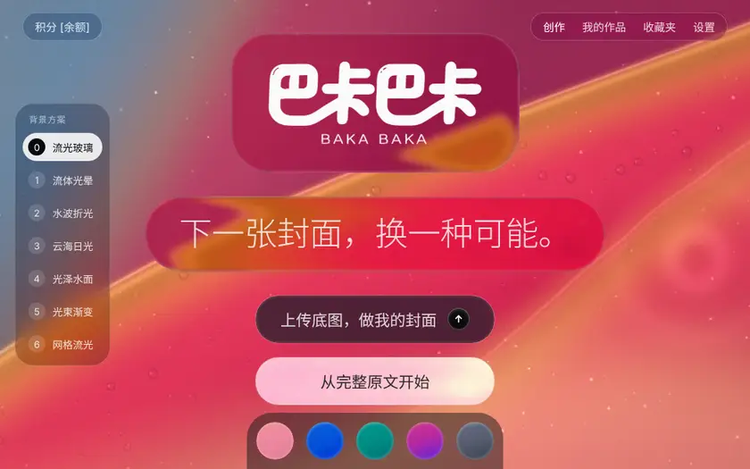
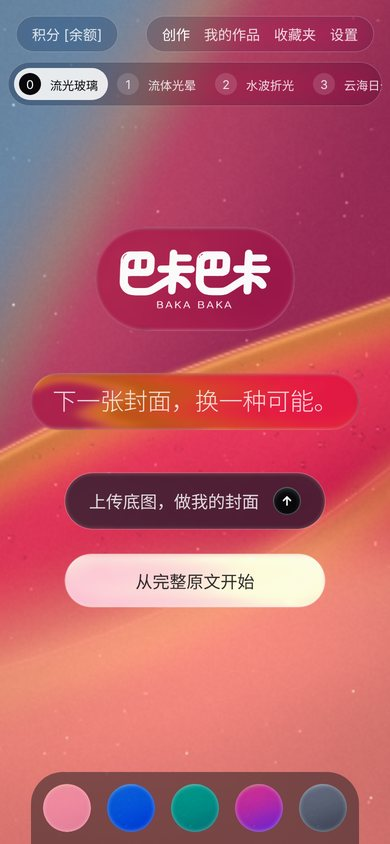
- 来源
- 自研 WebGL 着色器，无第三方依赖
- 顾虑
- 光效偏弱：只有玻璃亮边和微粒，没有「光在变」的感觉
你要的是：背景一直在流动、鼠标/手指能和它互动、光会跟着变。我在 GitHub 上找了 6 个开源实现。每个方案依次给出三张图：作者自己的 demo 原样跑、接到你认可的珊瑚红液态玻璃首页上的样子、手机竖屏。0 号是现在这版，用来对照。
动图里的鼠标移动和点击是脚本模拟的。录制环境是没有显卡的软件渲染，所以是逐帧推进录的，真机上会更顺。
你可以直接说编号，比如「2」或「2 + 5 的光」。在「巴卡巴卡 液态玻璃」页面左侧有「背景方案 0–6」，点一下就能现场切换着试（手机上在顶部横排），底部圆点仍然切配色。
| 编号 | 名称 | 流动 | 互动 | 光效变化 | 性能负担 | 来源 · 许可 |
|---|---|---|---|---|---|---|
| 0 | 流光玻璃（现版） | 中 | 中 | 弱 | 低 | 自研 |
| 1 | 流体光晕 | 中 | 强 | 强 | 高 | WebGL-Fluid-Simulation · MIT |
| 2 | 水波折光 | 中 | 强 | 中 | 中 | jquery.ripples · MIT |
| 3 | 云海日光 | 强 | 中 | 强 | 高 | Vanta Clouds · 着色器 CC BY-NC-SA |
| 4 | 光泽水面 | 中 | 中 | 中 | 中 | Vanta Waves · MIT |
| 5 | 光束渐变 | 强 | 中 | 强 | 中 | Paper Shaders · Apache-2.0 |
| 6 | 网格流光 | 强 | 弱 | 弱 | 低 | mesh-gradient · MIT |
你上一轮选定的珊瑚红版本：四层玻璃波浪缓慢流动，鼠标附近波浪会弯，划过和点击有水波纹，闪光微粒漂浮。


实时流体模拟。原版是黑底彩色烟雾；接到首页后改成透明一层叠在流光玻璃上，颜色取当前配色，鼠标悬停划过就会拖出发光的流体（原版要按住拖），带泛光（bloom）和体积光（sunrays），每两三秒还会自己从两侧飘进一缕。
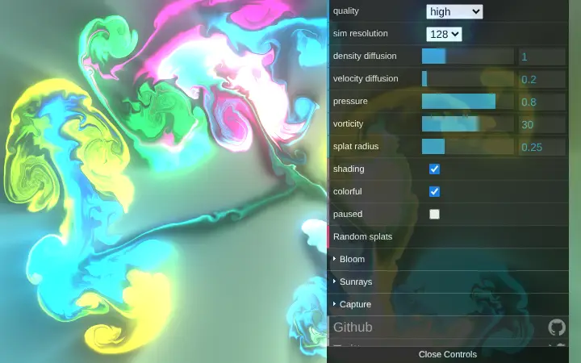
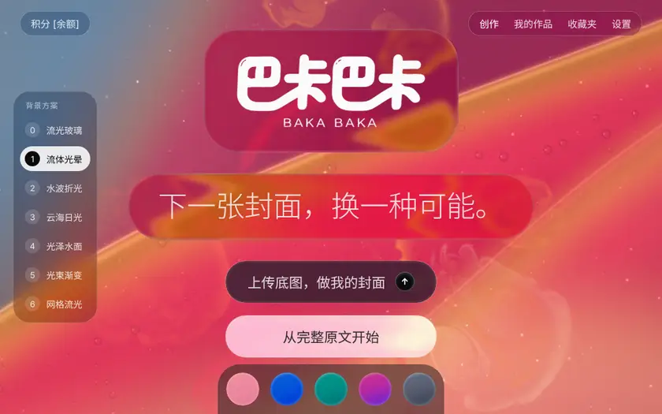
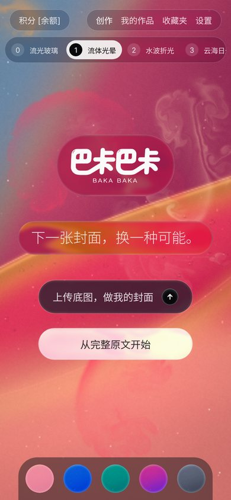
a2d2929（2024-11-12）真实的二维水面模拟：每个像素记录水面高度，波会传播、反射、衰减，水下的画面按波面折射。原版是把一张静态图变成水面；我改成水下是实时流动的玻璃背景，所以「流动」和「水纹」同时存在。高光方向会跟着鼠标转，并随时间缓慢摆动，光在波纹上滑过。
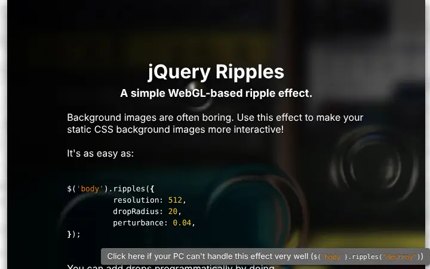
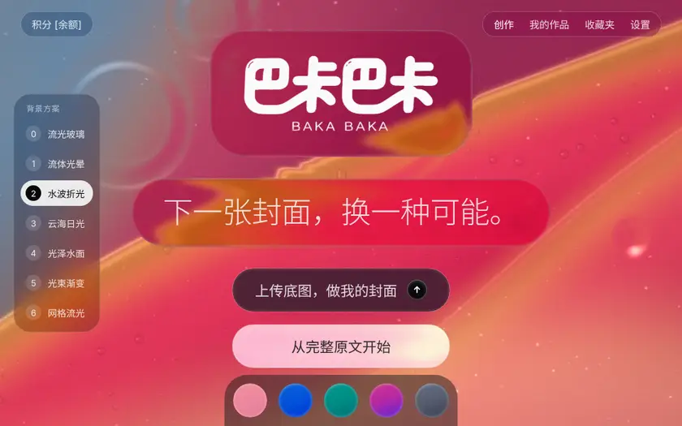
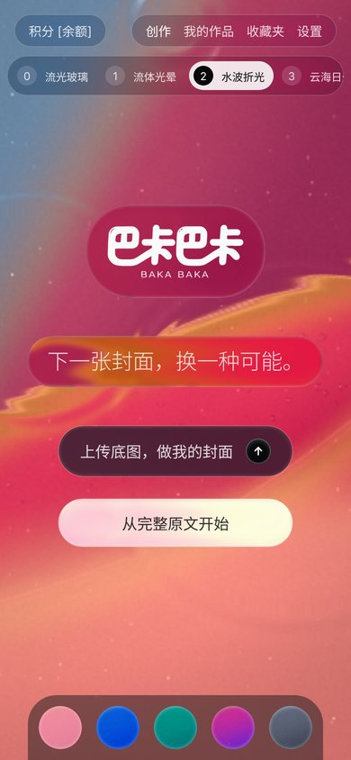
e90bd54（2019-09-15，算法成熟，作者已不常更新）体积云 + 太阳。云一直在飘，鼠标会转动视角，太阳和光晕跟着移动，是这几个里「光在变」最自然的。我把天空、云、太阳都换成珊瑚色晚霞。
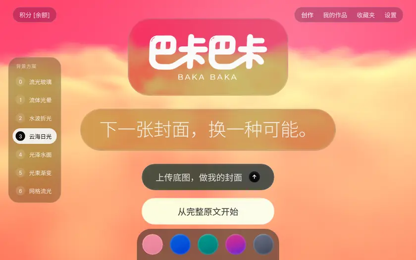
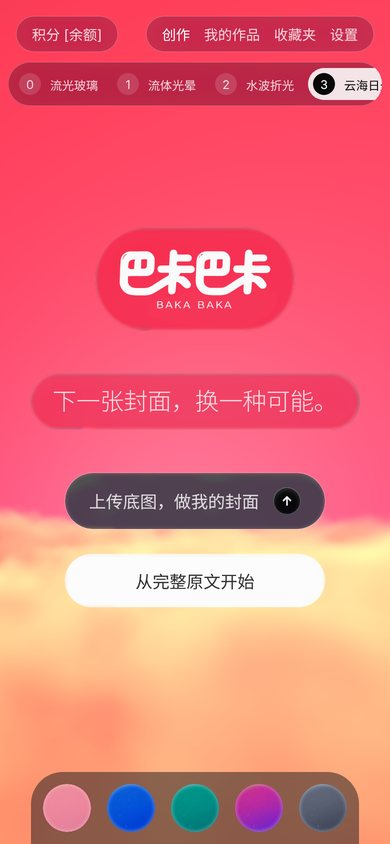
f8b3519（2023-01-12）三维水面，镜头跟着鼠标移动，高光在起伏的面上滑动。颜色压成深珊瑚，提高了光泽度。
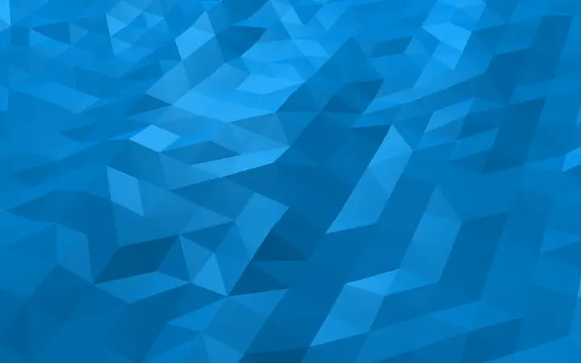
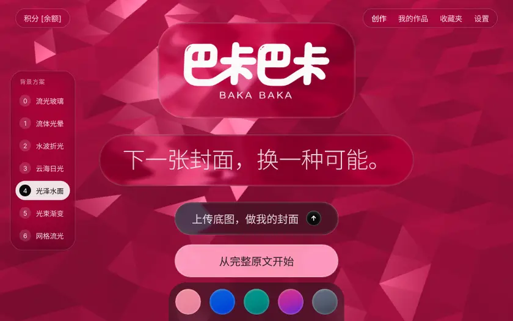
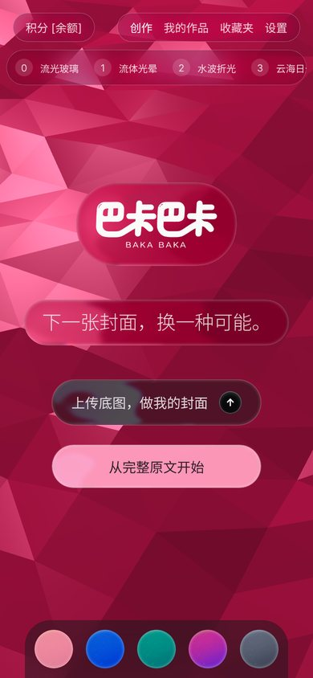
两层着色器叠加：底下是缓慢流动的网格渐变色场，上面是一束束「上帝光」，用滤色叠上去。光源跟着鼠标在上方移动，点击时光强闪一下再回落。
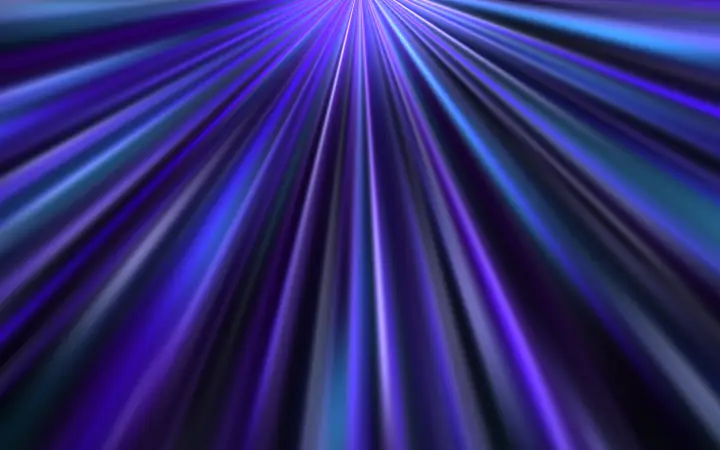
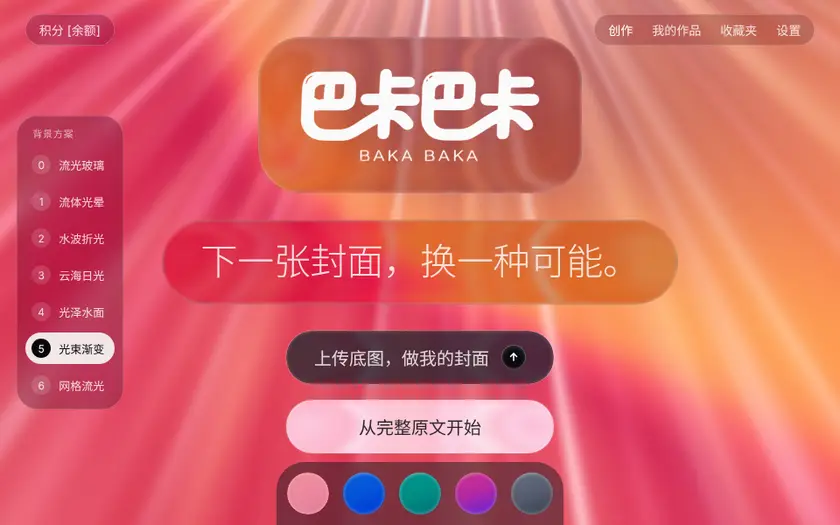
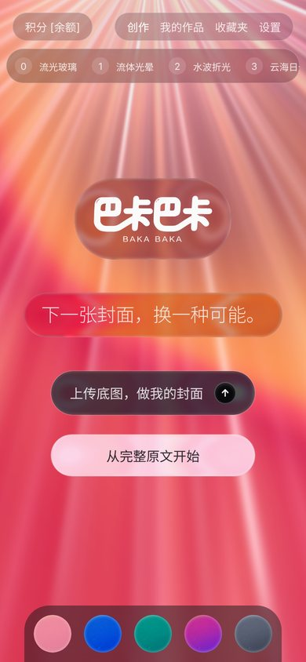
43cd68d（2026-09-17）· npm 0.0.81Stripe 官网、SwiftUI MeshGradient 那种大色块缓慢流动。库本身不响应鼠标，我加了一个跟随鼠标的柔光斑和点击光环。
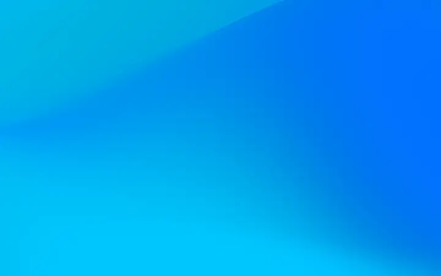
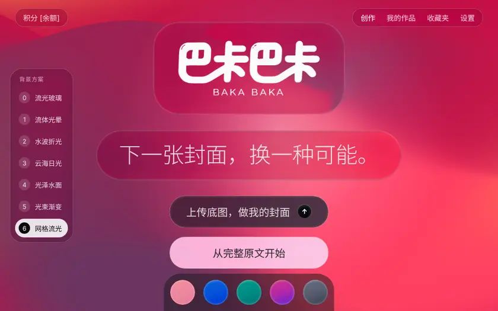
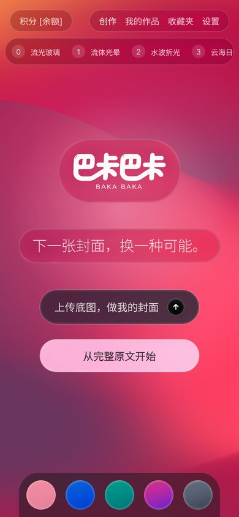
83ff215 · npm 2.0.2所有候选都在本地 Chromium 实际跑过；许可证全文随首页一起放在 licenses/ 目录。